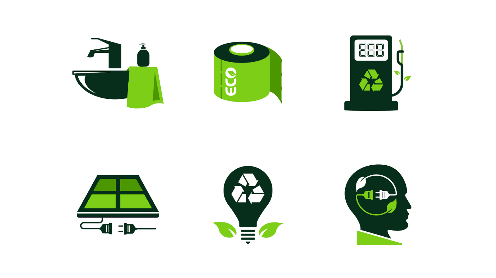

Sustentabilidade em Foco
Os produtos Eco-Friendly, também conhecidos como produtos sustentáveis ou verdes, são aqueles que são fabricados, utilizados e descartados de maneira que causem o mínimo de impacto negativo no meio ambiente. Ecofriendly, uma combinação das palavras "ecológico" e "amigável", em inglês, refere-se a produtos e práticas que são cuidadosamente desenvolvidas. Esta página explora o mercado de produtos eco-friendly, destacando sua importância, diversidade e impacto positivo no meio ambiente e na sociedade..
